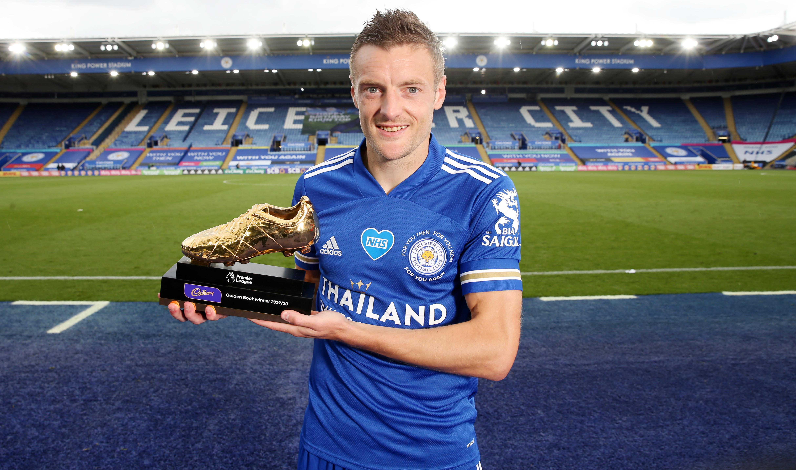

Awards
클럽기록
FC 핼리팩스 타운 - 노던 프리미어 리그 프리미어 디비젼 2010-11 시즌 우승
플릿우드 타운 -
컨퍼런스 프리미어 2011-12 시즌 우승
레스터 시티 -
풋볼리그 챔피언쉽 2013-14 시즌 우승
잉글랜드 프리미어 리그 2015-16 시즌 우승

수상기록
FWA 올해의 선수: 2015-16
PFA 올해의 팀: 2015-16, 2019-20
프리미어 리그 득점왕: 2019-20
프리미어 리그 올해의 선수: 2015-16
프리미어 리그 이달의 선수: 2015년 10월 · 11월, 2019년 4월 · 10월
프리미어 리그 이달의 골: 2018년 3월
컨퍼런스 프리미어 득점왕 : 2011-12
컨퍼런스 프리미어 올해의 팀: 2011-12
컨퍼런스 프리미어 이달의 선수: 2011년 11월
레스터 시티 올해의 선수: 2019-20
레스터 시티 선수단 선정 올해의 선수: 2013-14, 2019-20
BBC 올해의 골: 2017-18
개인기록
프리미어 리그 역대 최고령 득점왕 (만 33세)
레스터 시티 최초 FWA 올해의 선수 수상
레스터 시티 최초 프리미어 리그 올해의 선수 수상
프리미어 리그 역대 최다 연속 경기 골 (11골)
프리미어 리그 30대 이후 최다골